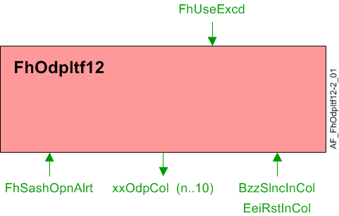

通风柜操作员显示面板接口，QMX3.P88 (FhOdpItf12)
Overview
应用功能》Fume hood operator display panel interface 12, QMX3.P88" (FhOdpItf12）连接到通风柜控制器。显示屏、报警灯、报警喇叭和绿叶指示器根据通风柜的当前状态进行控制。 QMX3.P87 提供按钮将通风柜置于紧急模式、静音警报并提供能效请求。
Note
当通风柜的管理模式为“启动”时，ODP 在设置和调试过程中无法完全发挥作用。查看房间段 AFHvac16有关通风柜管理模式对象的信息。
主要特点：
- LED Display
Function

| 命令或请求（或相关） |
| 条件或状态或可用性的通知 |
| 设备模式 |
| 互锁（内部信号，不是 BACnet 对象；有关其他信息，请参阅互锁部分） |


LED Display
Alarm indication: 报警指示屏幕将显示代表当前报警状态的图形图标。报警指示是一个多状态过程值对象，有 5 种状态：
- No Alarm
- Close the sash
- Airflow alarm
- Critical alarm
- Fire
Displaying face velocity or exhaust airflow:当显示在 ODP 上时，面速度和排气量可能会显得不稳定。配置扩展项DspyWght, DspyRslVFace和DspyRslAirFlEh用于稳定显示值。
DspyWght以百分比形式输入并用于计算加权平均值。
DspyRslVFace表示将显示的速度读数相对于面速度设定点的增量。
DspyRslAirFlEh表示将显示的排气流量读数相对于排气流量设定值的增量。
当 ODP 上通风柜的控制可能显得很慢时DspyWght设置得很低并且会发生大的窗扇调整。未过滤的面速度DspyRslVFace或排气量DspyRslAirFlEh 当排气流量设定值与之前的排气流量设定值相比变化超过 20% 时，将显示“applyed”。将使用未过滤的读数，直到速度/volume 和设定值之间的差值小于或等于DspyRslVFace / DspyRslAirFlEh.
面速度设定点为 ODP，SpVFaceOdpCol，设置为与通风柜表面速度设定值相同的值。
ODP 的排气流量设定值，SpAflEhOdpCol，设置为与通风柜排气流量设定值相同的值。
ODP 配置扩展项DspyValue确定是否显示面速度或排气量。 ODP 上显示的值是为两者计算的VFaceOdp和SpVFaceOdpCol.
Alarm Lights:红色、黄色和绿色 LED 警报灯（RedLedOdp, YlwLedOdp, andGrnLedOdp) 上的 ODP 有 6 个操作状态。
- Continuously Off
- Flash (100ms / 900ms)
- Blink (500ms / 500ms)
- Blink 5 times, then stop
- Blink 5 times every minute
- Continuously On
LEDs 的多状态对象的值由输入 Fh 模式、有效管理模式和气流警报确定。
Alarm Horn:警报喇叭（BzzModOdp) 上的 ODP 有 6 个操作状态。
- Continuously Off
- Short Buzz (100ms / 900ms)
- Long Buzz (500ms / 500ms)
- Buzz 5 times, then stop
- Buzz 5 times every minute
- Continuously On
报警喇叭的多状态对象的值由输入 Fh 模式、有效管理模式、窗扇警报、窗扇打开时间和气流报警确定。
按下静音按钮且警报条件尚未清除且新警报出现后，应打开喇叭。使喇叭静音是 ODP 中的本地功能。 AF 确实监视喇叭静音按钮（BzzSlncIn) and updates a multistate output (BzzStaOdp）有 3 种可能的状态。
- No Alarm
- Alarm Active, Alarm Horn On
- Alarm Active, Alarm Horn Silenced
IfBzzSlncIn被激活时FhSashOpnAlrtis active, the timer for the switch-on delay for the sash opening alert will be reset.
Green Leaf:The Green Leaf LED (EeiOdp) 上的 ODP 有 5 个操作状态。
- Undefined
- Poor
- Satisfactory
- Good
- Excellent
绿叶 LED 颜色的控制在 ODP 内处理。当它变成绿色的时候EeiOdp值为 4 或更高，如果值为 2 或 3，则为红色，如果值为 1，则为关闭。
绿叶 LED 的多状态对象的值由输入 Fh 模式、有效管理模式、气流警报、窗扇警报、Fh 气流设定点、Fh 气流最小值和来自设定点 AF 的能效指示确定。
Configuration
 Parameters
Parameters
描述 | 范围 | 默认值 |
|---|---|---|
Display resolution for face velocity | DspyRslVFace | 0.02 [m/s] |
Display resolution for exhaust air volume | DspyRslAirFlEh | 5 [m3/h] |
Display weight 如果将 DspyWght 设置为零，操作员显示面板将“冻结”在最后读取的值。将 DspyWght 设置为非零值（建议值为 30%）允许操作员显示面板更新显示的面速度。 | DspyWght | 100 [%] |
Switch-on delay for sash opening alert | DlyOnSashAlrt | 300 [s] |
Enable sash tone ▶ 设置为 yes，允许在出现窗扇打开警报或窗扇最大开启警报时激活蜂鸣器。 0:No | EnSashTone | 0:No |
Switch-off delay for sash maximum opening buzzer | DlyOffSshmBzz | 0 [s] |
Air velocity unit | AirVUnit | [m/s] |
Air volume flow unit | AirFlUnit | [m3/h] |
Interface
界面 | 描述 | 类型 | 参考号 | 拥有者 | |
|---|---|---|---|---|---|
BzzSlncInCol | Collection of buzzer silence input value | ColView | ● | - | |
| BzzSlncInRs | Result of buzzer silence input value 0:Off | BCalcVal | ● | - |
| BzzSlncIn | Buzzer silence input value 0:Off | BCalcVal | ◉ | Room segment / Field device |
GrnLedOdpCol | Collection of ODP green LED mode | ColView | ● | - | |
| GrnLedOdp | ODP green LED mode 1:Off | MPrcVal | ◉ | Room segment / Field device |
YlwLedOdpCol | Collection of ODP yellow LED mode | ColView | ● | - | |
| YlwLedOdpCol | Collection of ODP yellow LED mode 枚举见ODP green LED mode | MPrcVal | ◉ | Room segment / Field device |
RedLedOdpCol | Collection of ODP red LED mode | ColView | ● | - | |
| RedLedOdp | Collection of ODP red LED mode 枚举见ODP green LED mode | MPrcVal | ◉ | Room segment / Field device |
AlmIndOdpCol | Collection of alarm indication for ODP | ColView | ● | - | |
| AlmIndOdpCol | Collection of alarm indication for ODP 1:Blank | MPrcVal | ◉ | Room segment / Field device |
EeiOdpCol | Collection of ODP energy efficiency indicator | ColView | ● | - | |
| EeiOdp | ODP energy efficiency indicator 1:Undefined | MPrcVal | ◉ | Room segment / Field device |
BzzModOdpCol | Collection of ODP buzzer mode | ColView | ● | - | |
| BzzModOdp | ODP buzzer mode 1:Off | MPrcVal | ◉ | Room segment / Field device |
BzzStaOdpCol | Collection of buzzer state for ODP icon | ColView | ● | - | |
| BzzStaOdp | Buzzer state for ODP icon 1:Off | MPrcVal | ◉ | Room segment / Field device |
AirFlEhOdpCol | Collection of exhaust air volume flow for ODP | ColView | ● | - | |
| AirFlEhOdp | Exhaust air volume flow for ODP | APrcVal | ◉ | Room segment / Field device |
VFaceOdpCol | Collection of face velocity for ODP | ColView | ● | - | |
| VFaceOdp | Face velocity for ODP | APrcVal | ◉ | Room segment / Field device |
SpVFaceOdpCol | Collection of face velocity setpoint to ODP | ColView | ● | - | |
| SpVFaceOdpCol | Collection of face velocity setpoint to ODP | APrcVal | ◉ | Room segment / Field device |
SpAflEhOdpCol | Collection of exhaust air volume flow setpoint to ODP | ColView | ● | - | |
| SpAirFlEhOdp | Exhaust air volume flow setpoint to ODP | APrcVal | ◉ | Room segment / Field device |
FhSashOpnAlrt | Fume hood sash opening alert | BPrcVal | ◉ | Hvac16 | |
FhSashMaxAlrt | Fume hood sash maximum opening alert | BPrcVal | ◉ | Hvac16 | |
FhUseExcd | Fume hood use exceeded 0:Off | BCalcVal | ● | - | |
Engineering and commissioning
当通风柜的管理模式为“启动”时，ODP 在设置和调试过程中无法完全发挥作用。查看房间段 AFHvacLgt16有关通风柜管理模式对象的信息。